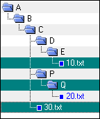
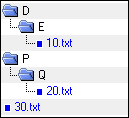
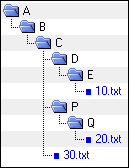
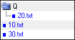

On the Actions menu, the Copy to Folder  command copies the selected files and folders to a given folder, optionally with the path intact. You can select items on one side of the Folder Compare view or the other, but not both.
command copies the selected files and folders to a given folder, optionally with the path intact. You can select items on one side of the Folder Compare view or the other, but not both.
If a folder is selected, only its filtered contents will be copied (same as if the folder was expanded and all visible contents selected). However, if an open folder is selected and any of its children are selected as well, then the folder's selection is ignored and only the selected children will be copied.
When you select Copy to Folder, you can make the target an archive file (such as a zip file). If the archive file does not exist, BC will create it for you.
Path Options Example

In this example, three items are selected: The file 10.txt, the folder Q and the file 30.txt.
The pictures below show how the items look in the target folder, using each of the three available path options.

Keep Relative Folder Structure Determines the minimum difference between all of the selected files' paths, and creates that in the target folder. In this example, folders D and P were not selected, but they were created in the target folder in order to keep the same relative structure.

Keep Base Folder Structure Creates the entire path (back to the base folder) in the target folder.

Don't Keep Folder Structure Ignores all path information and copies all selected files and folders into the target folder together. In this example, only the Q folder was created in the target folder, because it was specifically selected.